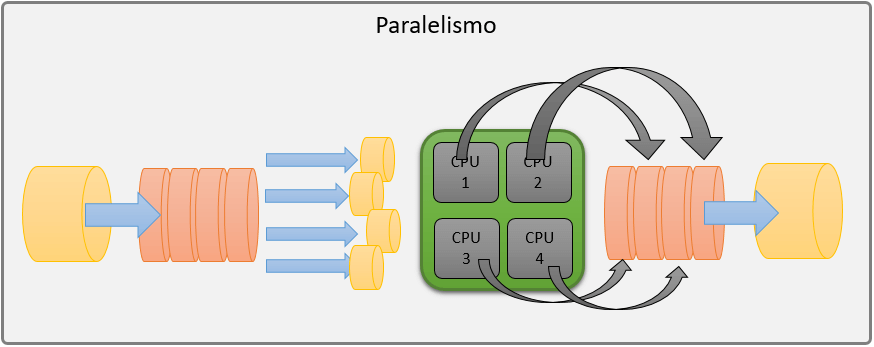
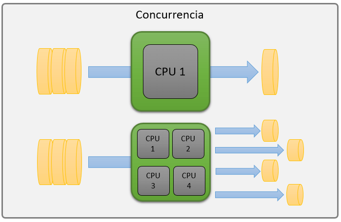

Arquitectura Básica del Procesador
Paralelismo:
El paralelismo es una técnica en la que múltiples tareas o procesos se ejecutan al mismo tiempo, aprovechando varios núcleos o procesadores en un sistema. En los procesadores modernos, los núcleos múltiples permiten que diferentes hilos de ejecución se procesen simultáneamente, acelerando el rendimiento de tareas complejas. Esto es especialmente útil en aplicaciones que requieren grandes cantidades de cálculo, como simulaciones científicas, renderizado de gráficos y procesamiento de datos en grandes volúmenes. Los sistemas paralelos pueden dividir una tarea en partes más pequeñas que se procesan en paralelo, lo que reduce significativamente el tiempo de ejecución de los programas.

Concurrencia:
La concurrencia, en cambio, se refiere a la capacidad de un sistema para gestionar múltiples tareas o procesos de manera que parezcan ejecutarse al mismo tiempo, pero no necesariamente se ejecutan simultáneamente. En un sistema concurrente, los procesos se intercalan en el tiempo, y el sistema se encarga de cambiar entre ellos de manera eficiente. Aunque en algunos casos puede haber paralelismo, la concurrencia no requiere que los procesos se ejecuten en paralelo. Es común en entornos donde múltiples tareas deben ser gestionadas, como servidores web o sistemas operativos que manejan varios procesos o hilos al mismo tiempo, asegurando que todos obtengan su tiempo de CPU según sea necesario.
